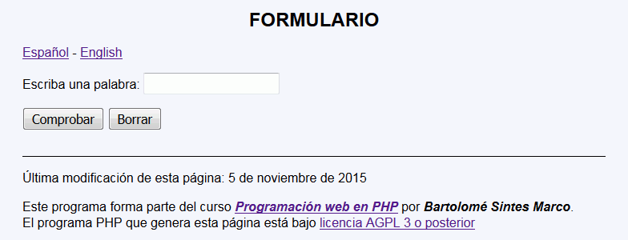
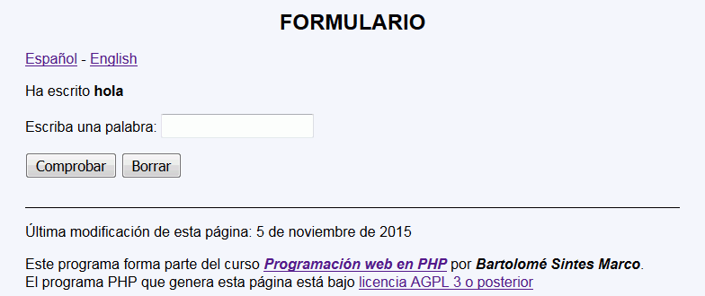
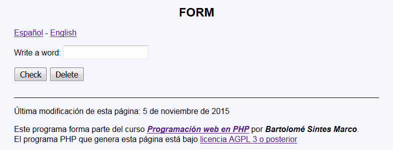
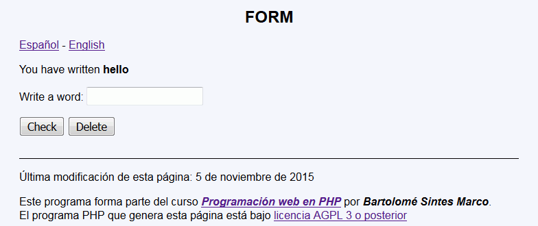

Traducir - Ejemplo de programa
Nota: El día del examen los alumnos no tienen acceso a este ejemplo, solamente tienen acceso a las capturas del apartado anterior.
Un ejemplo de programa puede probarse en la ventana siguiente:
En este ejercicio se debe crear un programa que pida una palabra y la muestre, pero cuyo interfaz se pueda mostrar en español o en inglés.




$textos = [
1 => ["Formulario", "Form"],
2 => ["Escriba una palabra", "Write a word"],
3 => ["Comprobar", "Check"],
4 => ["Borrar", "Delete"],
5 => ["Ha escrito", "You have written"]
];
de manera que las cadenas en español o en inglés se escriben indicando dos índices:
$textos[1][0] => Formulario
$textos[1][1] => Form
$textos[2][0] => Escriba una palabra
$textos[1][1]
<h1>Formulario</h1>
<p><a href="traducir_1.php?idioma=0">Español</a> - <a href="traducir_1.php?idioma=1">English</a></p>
<form action="traducir_2.php" method="get">
<p>Escriba una palabra: <input type="text" name="nombre" size="20" maxlength="20" /> </p>
<p><input type="hidden" name="idioma" value="0" />
<p><input type="submit" value="Comprobar" />
<input type="reset" value="Borrar" /></p>
</form>
<h1>Form</h1>
<p><a href="traducir_1.php?idioma=0">Español</a> - <a href="traducir_1.php?idioma=1">English</a></p>
<form action="traducir_2.php" method="get">
<p>Write a word: <input type="text" name="nombre" size="20" maxlength="20" /> </p>
<p><input type="hidden" name="idioma" value="1" />
<p><input type="submit" value="Check" />
<input type="reset" value="Delete" /></p>
</form>
Nota: El día del examen los alumnos no tienen acceso a este ejemplo, solamente tienen acceso a las capturas del apartado anterior.
Un ejemplo de programa puede probarse en la ventana siguiente: